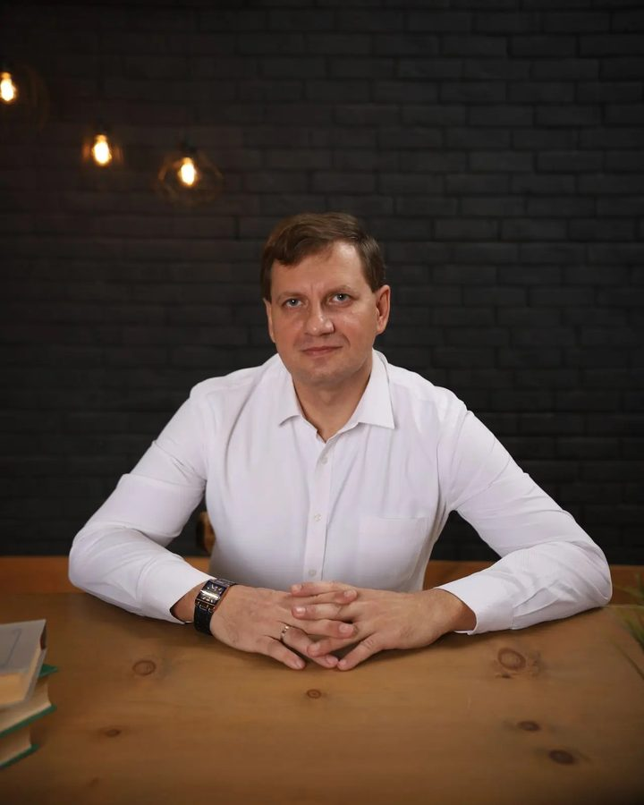

Главная / Обо мне
Обо мне
Мой профессиональный путь
Школьные годы
Моя дорога в профессию началась ещё в школе. Я учился в школе №225 города Ташкента. С 5 по 9 класс я занимался в физико-математическом классе. Нашим классным руководителем и учителем математики была Людмила Ивановна Шайхутдинова: талантливый педагог, на чьих уроках математика становилась живым и интересным предметом.
В 10–11 классах я поступил в физико-химико-математический класс, созданный на основе Института «Электроники». Занятия у нас вели преподаватели этого института и Института Химии, поэтому школьная программа сразу соприкасалась с настоящей наукой и техникой. Учителем математики был Юрий Самуилович Коваленко. Он поддерживал меня, помогал осваивать предметы и готовиться к поступлению в Ташкентский государственный технический университет (ТГТУ).
Хочется закончить этот раздел словами благодарности: именно учителя научили меня не бояться сложных задач. Сегодня я стараюсь делать то же самое для своих учеников.
Начало пути
Школьные годы привели меня в Ташкентский государственный технический университет, где в 1997–2001 годах я получил первое высшее образование. С отличием окончив бакалавриат по специальности «Электроэнергетика», я заложил прочный фундамент технических знаний и сформировал стремление к постоянному развитию.
Переезд и профессиональное развитие
Переезд в Россию стал новым этапом в моей жизни. Работа в коммерческих структурах позволила мне приобрести ценный опыт в сфере информационных технологий и управления. Параллельно с работой я продолжал образование, и в 2012 году успешно окончил Поволжский государственный университет телекоммуникаций и информатики, получив красный диплом по специальности «Инженер-программист по автоматизированным системам управления».
Педагогическая деятельность
С 2020 года моя профессиональная деятельность неразрывно связана со сферой образования. В МБОУ «Школа №7» городского округа Самара я начал работать учителем информатики и математики. За это время мне удалось не только передать свои знания ученикам, но и значительно развить собственные педагогические навыки.
Новые горизонты
1 апреля 2023 года я занял должность заместителя директора по информационным технологиям, что позволило мне внести значительный вклад в цифровизацию образовательного процесса. Участие в конкурсе «Учитель года» в 2024 году стало важным этапом профессионального роста и подтверждением правильности выбранного пути.
Перспективы развития
Мой профессиональный путь — это история постоянного развития и стремления к совершенству. Сочетание технического образования, практического опыта и педагогической деятельности позволяет мне эффективно решать современные образовательные задачи. Я уверен, что мой опыт и знания помогут внести существенный вклад в развитие отечественного образования и подготовку нового поколения специалистов.
Каждый этап моего пути был наполнен новыми открытиями и достижениями. Я горжусь своими успехами и с оптимизмом смотрю в будущее, готовясь к новым профессиональным вызовам.
